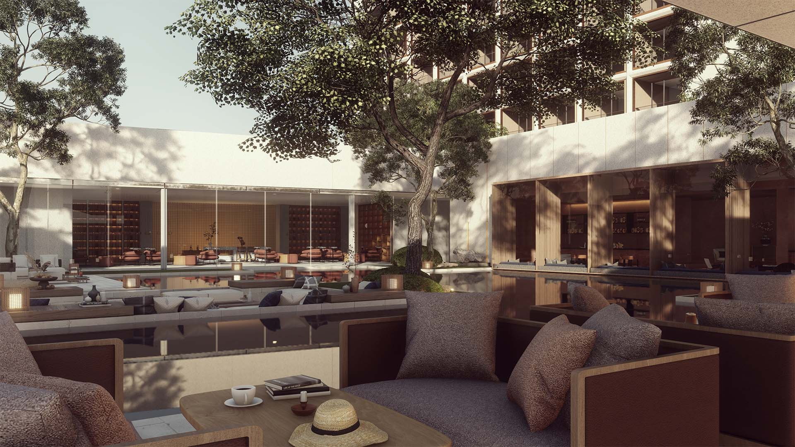
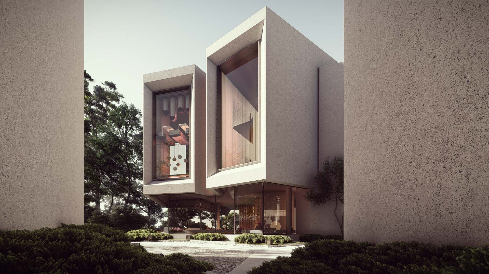
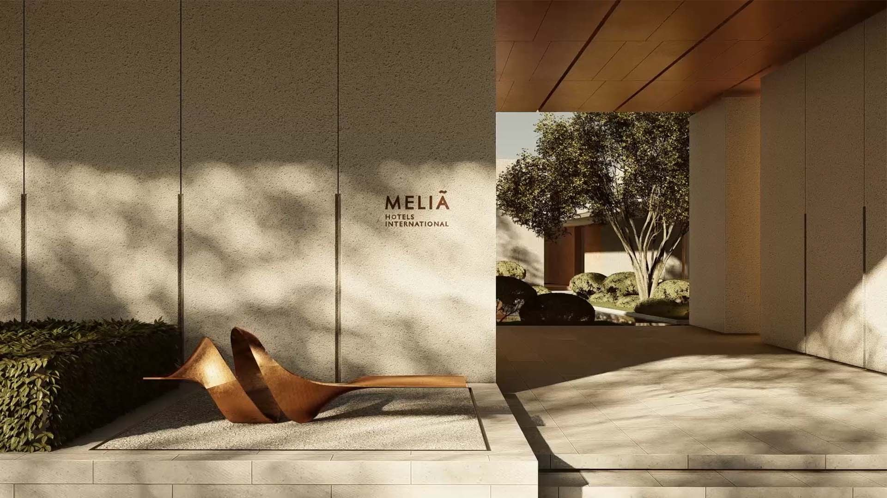
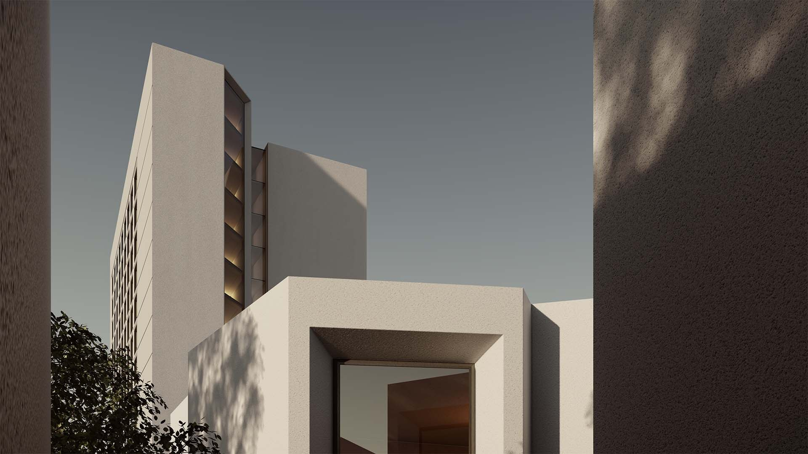
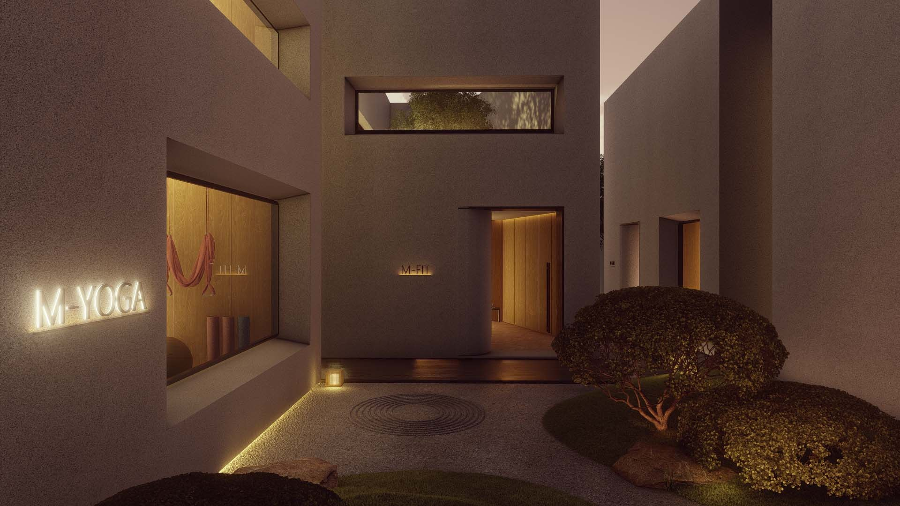
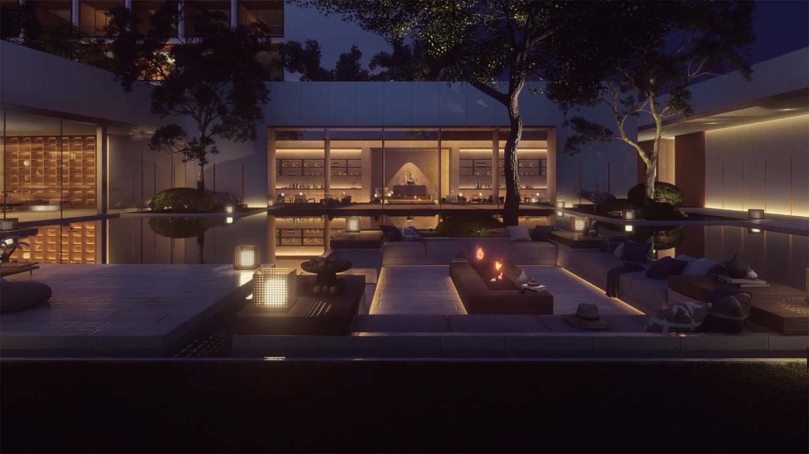
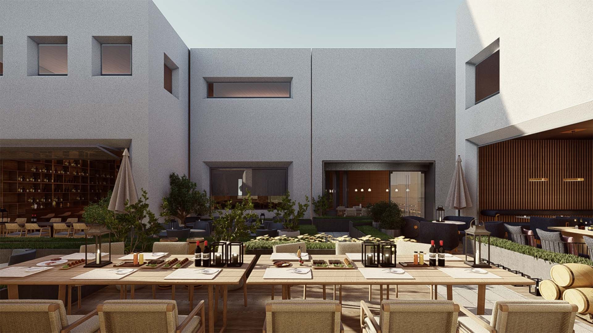
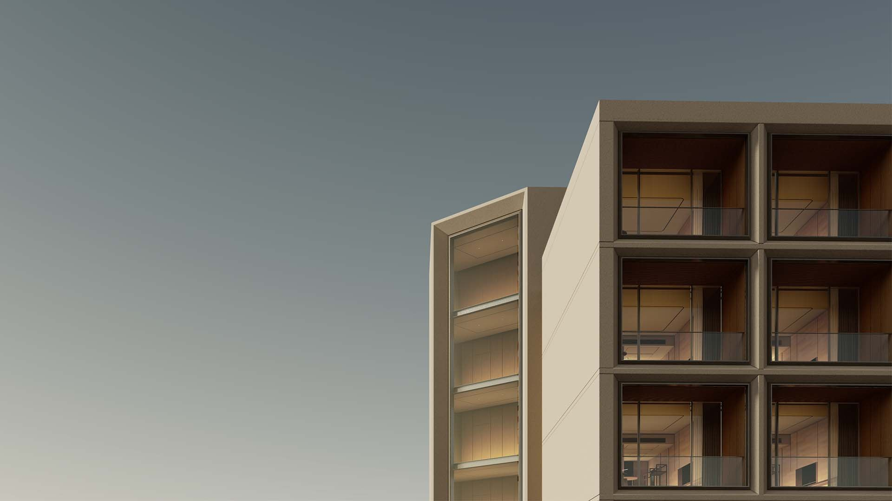

陕西 · 西安
西安美利亚
H2 项目档案 · 2021
Meliá Hotels International
全部作品
01项目介绍
响应后疫情时代的心理需求，将户外活动与功能完美衔接，组织多调性的活动花园，以室内室外化等手法将独栋商业、主题 mall 与酒店公区完美融合，打造亲子、时尚、美食、娱乐社交主题院落。结合西安慢行系统对街区升级，打造渭河边上坐望川，沉浸式公园POD。 度假感的公区与独栋商业街区咬合形成 T 字主街，串接渭河公园与兰池大道。商业和酒店均以橱窗这一商业元素为母题，关西院落式传统布局为模板，前者结合人流走向错动有氛围，后者辅以铜色细节精致有格调。 花园中的入住，游逛间的餐食，渭河边的风光，光影下的休憩，让客人慢下来，住下来，享受城市微度假的独特体验者提供了一份现代与传统相互交融的文化盛宴。














02资料
- 地点
- 陕西 · 西安
- 源档案年份
- 2021
- 档案酒店集团
- Meliá Hotels International
年份沿用原档案标注，并非经核实的竣工年份。源材料可能包含设计阶段图像。正式发布前，应确认现名称、项目状态、具体服务范围和图片署名。